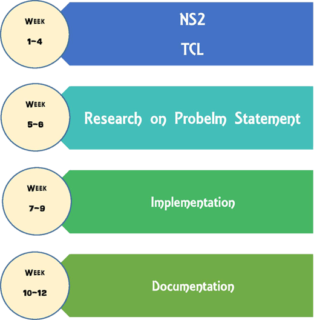

The Computer networks these days are suffering from unnecessary latency and poor system performance. The culprit is bufferbloat, the existence of excessively large and frequently filled buffers inside the network. Excessively large and frequently filled buffers causes higher latency and jitter, and also reduces the overall throughput of the network. Oversize buffers has become part of routers because of the reasons like more is better mentality, the cheap cost of the memory, and varying link capacities dynamically. This situation is very much impacting the throughput of short lived flows when they are present along with long lived flows, as long lived flows will occupy the queue. This phenomenon is called Bufferbloat. The increasing bandwidth of the network interfaces raises an important question concerning the size of these buffers. Under Buffered routers lead to packet loss, thus adversely affecting application performance, while an over-buffered router causes increased latency, complexity and cost. To reduce packet losses and maintaining queues with short buffers, we have implemented 2 AQM(Active Queue management) schemes (Random Early Detection(RED) RED and Stochastic Fair Queuing(SFQ) in NS2 and compared the results in various classes of traffic along with Drop Tail(DT). We have carried out simulations with TCP as well as mixed traffic and compared the AQM schemes on the basis of throughput, packet drop percentage, end to end delay and average flow completion time (AFCT) and have shown the trade-off between the schemes in different classes of traffic.
Domains
Computer Networks
Technologies Needed
NS2, TCL
Project Structure
What we provide
- Videos on Required technologies by Ravindrababu Ravula
- Project Implementation Videos by Ravindrababu Ravula
- Presentation Slides
- Assignments with solutions
- 12 weeks of expert guidance
- Assistance to Complete the Documentation